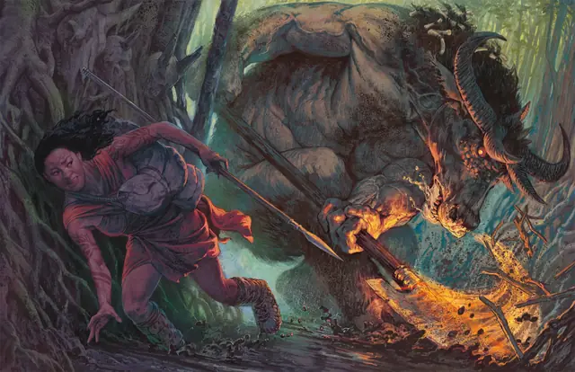

Минотавр Бафомета
Minotaur of Baphomet
Большое Чудовище, Хаотичное Злое

Класс Защиты 14 Инициатива +0 (10)
Хиты 85 (10к10 + 30)
Скорость 40 футов
| мод | спас | ||
|---|---|---|---|
| СИЛ | 18 | +4 | +4 |
| ЛОВ | 11 | +0 | +0 |
| ТЕЛ | 16 | +3 | +3 |
| мод | спас | ||
|---|---|---|---|
| ИНТ | 6 | −2 | −2 |
| МДР | 16 | +3 | +3 |
| ХАР | 9 | −1 | −1 |
Чувства Тёмное зрение 60 футов, пассивное Восприятие 17
Языки Бездны
Опасность 3 (700 опыта; БВ +2)
Действия
Демоническая глефа. Бросок рукопашной атаки: +6, досягаемость 10 фт. Попадание: 10 (1к12 + 4) Рубящего урона плюс 10 (3к6) Некротического урона.
Рога (Перезарядка 5–6). Бросок рукопашной атаки: +6, досягаемость 5 фт. Попадание: 18 (4к6 + 4) Колющего урона. Если цель — существо размером Большого размера или меньше и минотавр переместился как минимум на 10 футов по прямой к ней сразу перед попаданием, она дополнительно получает 10 (3к6) Колющего урона и Опрокидывается.
Бонус мастерства +2
Среда обитания Подземье
Сокровища Оружейные
Минотавр Бафомета
Берсерк демонического владыки Зверей
Демонический владыка Зверей Бафомет утверждает, что именно он создал минотавров, и требует от них поклонения. Большинство этих существ не признают его власть, но остальные становятся минотаврами Бафомета. Эти громилы больше остальных минотавров похожи на своего покровителя и готовы сеять хаос во имя Бафомета.
В редких случаях ими становятся другие существа, проклятые магами или злобными божествами.
Как правило, минотавры Бафомета живут в лабиринтах. Внутри они выслеживают незваных гостей, а также показывают тайные проходы своим союзникам. Совершите бросок по таблице «Лабиринт минотавра» для вдохновения или выберите сами место обитания минотавра.
Лабиринт минотавра
| 1к4 | Минотавр Бафомета скрывается... |
| 1 | В многоуровневой шахте или канализации. |
| 2 | Среди лабиринтов, соединённых магическими порталами. |
| 3 | Среди ядовитого болота с паутиной тропинок. |
| 4 | В руинах погребённого под землёй дворца или храма. |